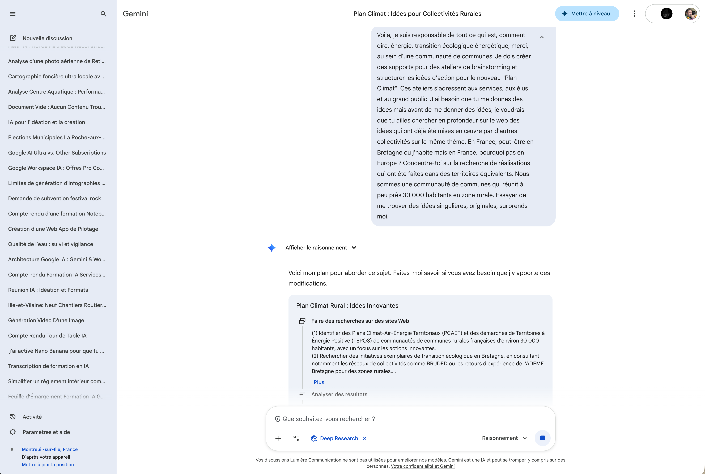

Recherche approfondie
La Recherche approfondie (Deep Research) est une fonctionnalité avancée de Gemini qui va bien au-delà d'une simple réponse. Gemini élabore un véritable plan de recherche, explore méthodiquement de nombreuses sources sur le web, et produit un rapport structuré et sourcé — comme un assistant de recherche qui travaillerait pour vous pendant plusieurs minutes.
Cliquez sur les pastilles orange pour découvrir chaque fonctionnalité

Un temps de réponse plus long, des résultats plus riches
Contrairement à une requête classique qui répond en quelques secondes, la Recherche approfondie prend entre 5 et 15 minutes selon la complexité du sujet et le nombre de sources à explorer. Pendant ce temps, Gemini navigue sur le web, analyse les contenus pertinents et synthétise ses découvertes.
Une fois la recherche terminée, vous obtenez un rapport détaillé et structuré, avec des références vers les sources consultées. Deux options s'offrent alors à vous :
- Exporter vers Google Docs : le rapport est transformé en un document Google Docs complet, prêt à être partagé, annoté ou archivé.
- Copier-coller : copiez tout ou partie du rapport vers l'outil de votre choix (Word, messagerie, note interne, etc.).
- Consommation de ressources : chaque recherche approfondie mobilise significativement plus de ressources qu'une requête classique. Réservez-la aux sujets qui nécessitent vraiment une exploration en profondeur.
- Fiabilité des résultats : même si le rapport est riche et structuré, les résultats ne sont pas fiables à 100 %. Il est indispensable de vérifier les informations en cliquant sur les sources citées dans le document pour s'assurer de leur exactitude.
- Limite mensuelle : avec un compte Google Workspace standard, le nombre de recherches approfondies est limité à environ 20 par mois. Les formules avec extensions Gemini avancées peuvent offrir un quota plus élevé. Utilisez-les judicieusement pour des recherches à forte valeur ajoutée.